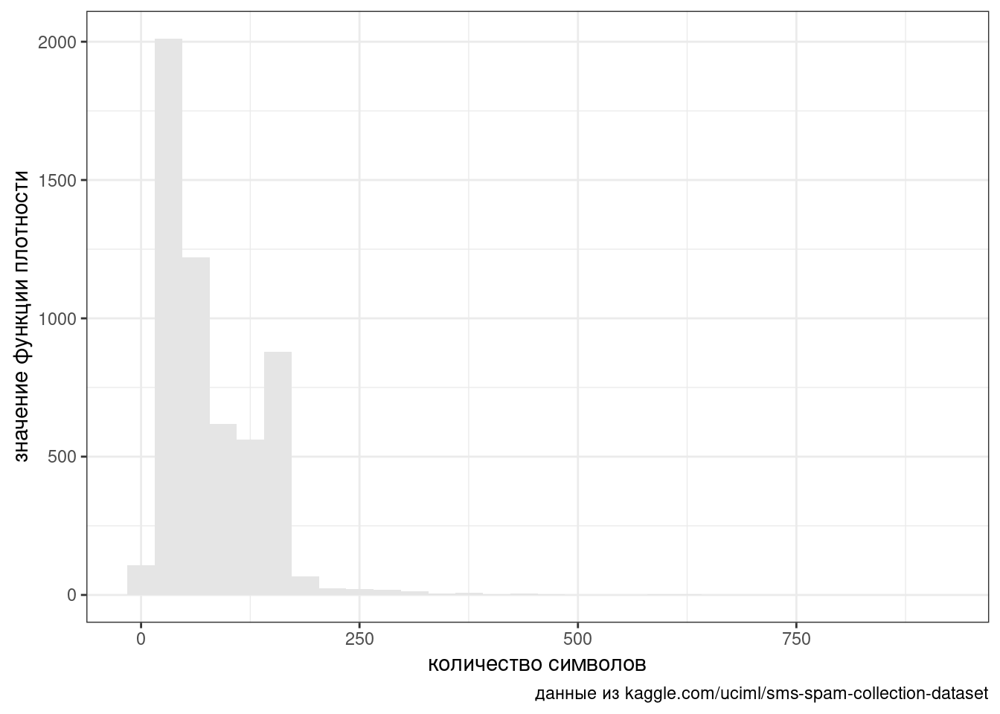
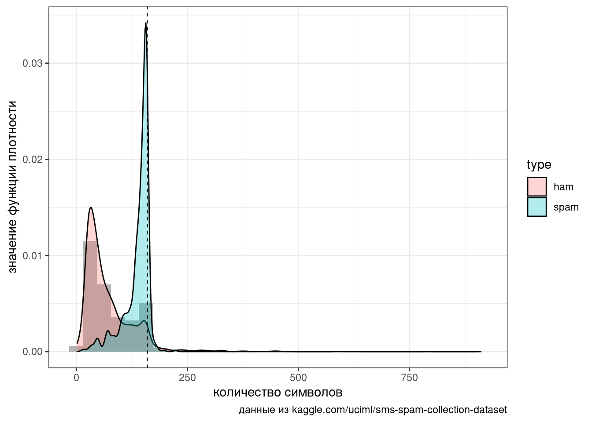
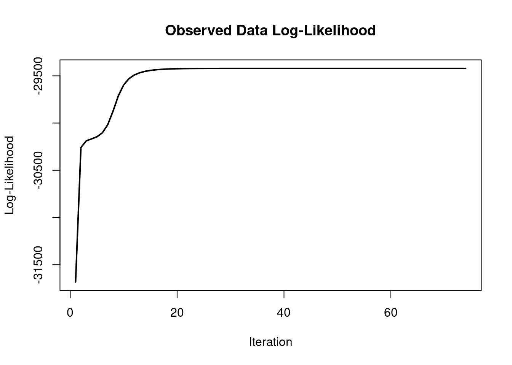
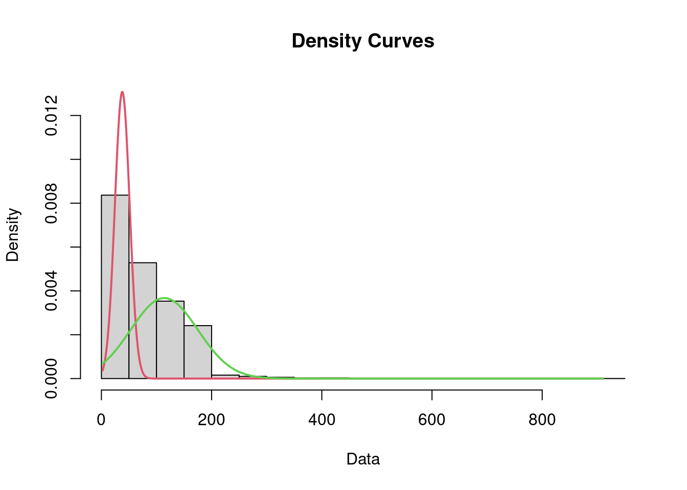
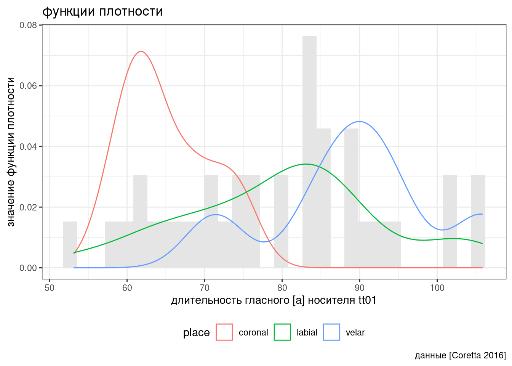
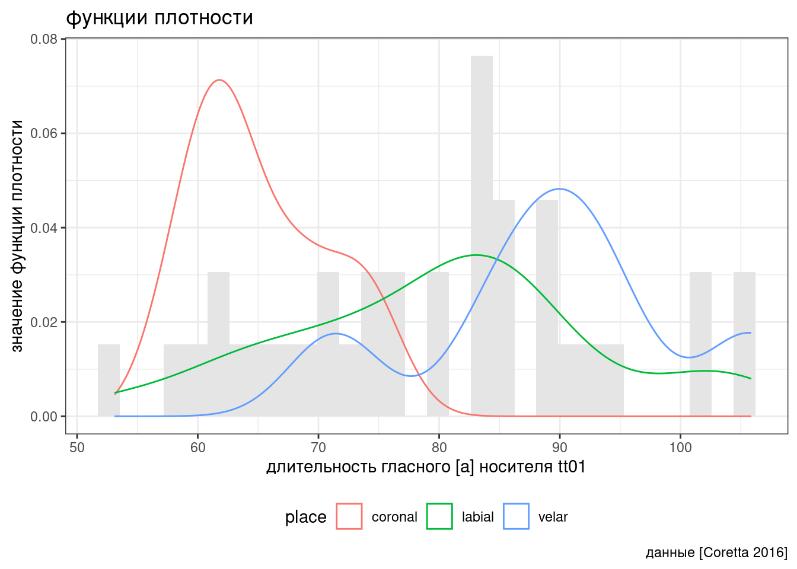

4 Модели смеси распределений
4.1 Cмеси распределений
Не все переменные выглядят так же красиво, как распределения из учебников статистики. Для примера возьмем датасет, который содержит спамерские и обычные смс-сообщения, выложенный UCI Machine Learning на kaggle. Посчитаем количество символов в сообщениях:
spam_sms <- read_csv("https://raw.githubusercontent.com/agricolamz/2021_da4l/master/data/spam_sms.csv")
glimpse(spam_sms)Rows: 5,572
Columns: 2
$ type <chr> "ham", "ham", "spam", "ham", "ham", "spam", "ham", "ham", "sp…
$ message <chr> "Go until jurong point, crazy.. Available only in bugis n gre…spam_sms %>%
mutate(n_char = nchar(message)) ->
spam_sms
glimpse(spam_sms)Rows: 5,572
Columns: 3
$ type <chr> "ham", "ham", "spam", "ham", "ham", "spam", "ham", "ham", "sp…
$ message <chr> "Go until jurong point, crazy.. Available only in bugis n gre…
$ n_char <int> 111, 29, 155, 49, 61, 147, 77, 160, 157, 154, 109, 136, 155, …spam_sms %>%
ggplot(aes(n_char))+
geom_histogram(fill = "gray90")+
labs(caption = "данные из kaggle.com/uciml/sms-spam-collection-dataset",
x = "количество символов",
y = "значение функции плотности")
Мы видим два явных горба и, как можно догадаться, это связано с тем, что спамерские сообщения в среднем длиннее и сосредоточены вокруг ограничения смс в 160 символов:
spam_sms %>%
ggplot(aes(n_char))+
geom_histogram(fill = "gray70", aes(y = ..density..))+
geom_density(aes(fill = type), alpha = 0.3)+
labs(caption = "данные из kaggle.com/uciml/sms-spam-collection-dataset",
x = "количество символов",
y = "значение функции плотности")+
geom_vline(xintercept = 160, linetype = 2, size = 0.3)
4.2 Модели смеси распределений
Такого рода данные можно описать при помощи модели смеси разных распределений. Мы сейчас опишем нормальными распределениями, но, ясно, что семейство распределений можно было бы подобрать и получше.
library(mixtools)
set.seed(42)
spam_length_est <- normalmixEM(spam_sms$n_char)number of iterations= 73 summary(spam_length_est)summary of normalmixEM object:
comp 1 comp 2
lambda 0.439334 0.560666
mu 37.858905 114.070490
sigma 13.398985 60.921536
loglik at estimate: -29421.36 Класс, получаемый в результате работы функции normalmixEM() имеет встроеный график:
plot(spam_length_est, density = TRUE)
Однако, если хочется больше контроля над получаемым разультатом, я бы предложил использовать ggplot():
new_dnorm <- function(x, mu, sigma, lambda){
dnorm(x, mu, sigma)*lambda
}
spam_sms %>%
ggplot(aes(n_char))+
geom_histogram(aes(y = ..density..), fill = "gray90")+
stat_function(fun = new_dnorm,
args = c(mu = spam_length_est$mu[1],
sigma = spam_length_est$sigma[1],
lambda = spam_length_est$lambda[1]),
color = "#F8766D")+
stat_function(fun = new_dnorm,
args = c(mu = spam_length_est$mu[2],
sigma = spam_length_est$sigma[2],
lambda = spam_length_est$lambda[2]),
color = "#00BFC4")+
labs(caption = "данные из kaggle.com/uciml/sms-spam-collection-dataset",
x = "количество символов",
y = "значение функции плотности")+
geom_vline(xintercept = 160, linetype = 2, size = 0.3)Таким образом мы получили классификатор
first <- new_dnorm(seq(1, 750, by = 1),
mu = spam_length_est$mu[1],
sigma = spam_length_est$sigma[1],
lambda = spam_length_est$lambda[1])
second <- new_dnorm(seq(1, 750, by = 1),
mu = spam_length_est$mu[2],
sigma = spam_length_est$sigma[2],
lambda = spam_length_est$lambda[2])
which(first > second) [1] 6 7 8 9 10 11 12 13 14 15 16 17 18 19 20 21 22 23 24 25 26 27 28 29 30
[26] 31 32 33 34 35 36 37 38 39 40 41 42 43 44 45 46 47 48 49 50 51 52 53 54 55
[51] 56 57 58 59 60 61 62Если в смс-сообщении больше 62 символов, то согласно нашей модели, вероятнее всего это спам.
spam_sms %>%
mutate(model_predict = ifelse(n_char > 63, "predicted_spam", "predicted_ham")) %>%
count(model_predict, type) %>%
pivot_wider(names_from = type, values_from = n)Результат не идеальный, но лучше чем помечать как спам каждое 13 сообщение (\(747/(4825+747)\)).
В работе (Coretta 2016) собраны данные длительности исландских гласных. Отфильтруйте данные, оставив наблюдения гласного [a] (переменная vowel), произнесенные носителем tt01 (переменная speaker) и постройте следующие графики, моделируя длительность гласного (переменная vowel.dur) смесью трех нормальных распределений. Как вам кажется, насколько хорошо модель смеси справилась с заданием?
number of iterations= 114  

4.3 Несколько замечаний
- В наших примерах нам была доступна информация о классах (spam/ham, coronal/labial/velar), однако модель смесей распределений как раз имеет смысл применять, когда такой информации нет.
- В смеси распределений может быть любое количество распределений.
- Модели смеси распределений не ограничены только нормальным распределением, алгоритм можно использовать и для других распределений.
- Чаще всего в моделях смеси распределений используются распределения одного семейства, однако можно себе представить и комбинации посложнее.
- Модели смеси распределений (mixture models) не стоит путать со смешанными моделями (mixed effects models).